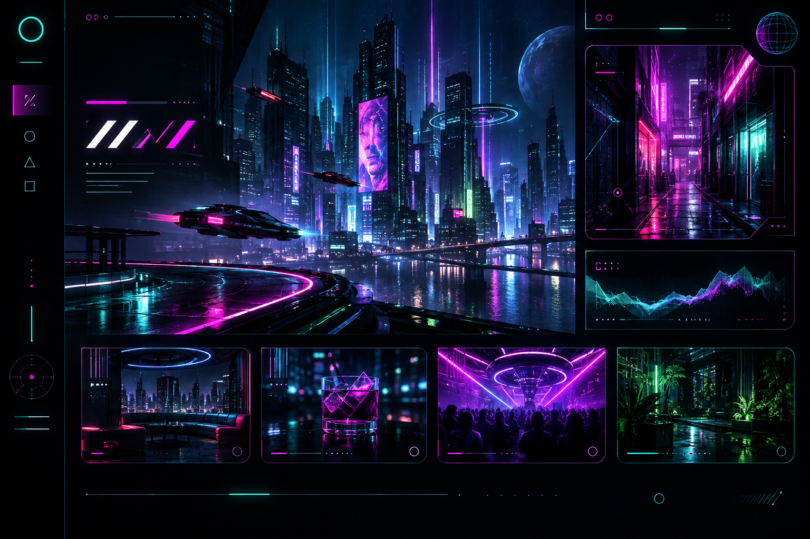

169 / 219
WORK / PROMPT DECODE
霓虹夜行 Cyberpunk Interface
完整提示词 Prompt
cyberpunk nightlife web interface as a high-impact visual art direction, black and deep indigo interface canvas, holographic panels, thin HUD lines, neon cyan and magenta labels, glowing data fragments, angular navigation, luminous status chips, cinematic sci-fi web design, futuristic digital art, full desktop page, asymmetrical composition, ink black cyan hot magenta acid green ultraviolet, scanlines, chromatic bloom, glass reflections, clear visual hierarchy, no browser chrome, no device frame, no watermark
备注
重点：HUD 线条、霓虹边缘光、扫描线和有控制的赛博层次。